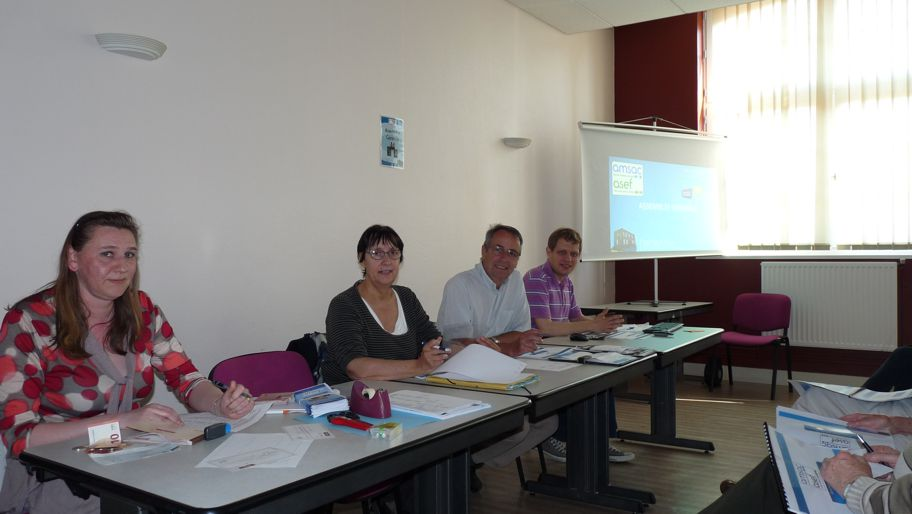

Jeudi 23 avril 2015
Assemblée Générale AMSAC-ASEF
L'assemblée générale de nos deux structures s'est déroulée ce jeudi 23 avril à la salle du CCAS de la Mairie de Pavilly.
En préambule, le Président a rappelé le contexte difficile dans lequel évoluent les acteurs du secteur de la réinsertion par le travail et ceux de l'aide à la personne.
Les projets associatifs des deux structures ont été également présentés. Ces documents sont les feuilles de route de nos associations.
Un diaporama regroupant les rapports d'activité et financiers a été déroulé par le trésorier de l'AMSAC. L'ensemble des rapports a été approuvé par les membres présents.
Mme ROULLOIN, vice-présidente et M. PONSOT, trésorier de l'ASEF n'ont pas souhaité renouveler leur mandat au Sein du Bureau de l'Association. M. BIDAUX et Mme GUILBERT leur succèdent à ces postes. Une nouvelle administratrice a été nommée.
Un verre de l'amitité à cloturé la manifestation
AMSAC - L'activité 2014 en quelques chiffres
- 371 inscrits au 31 décembre et 93 nouveaux inscrits
- 126 personnes mises à disposition (91 femmes et 35 hommes)
- 41 287,85 heures effectuées
L’activité 2014 représente 25,69 emplois en équivalents temps plein.
Sur l'année 7 personnes sont sorties vers un emploi durable (CDD ou intérim de +
de 6 mois et CDI ou création d'entreprise) et 27 personnes vers un emploi de
transition (CDD ou intérim de moins de 6 mois)
Le suivi des demandeurs d'emploi a été l'objet de plus de 5 000 entretiens
(physiques ou téléphonqiues) à l'année.
AZEF - L'activité 2014 en quelques chiffres
- 74 personnes ont travaillé pour la structure (70 femmes et 4 hommes)
- 27 clients en contrat "mandat" et 240 en contrat "prestation" ont bénéficié
des services de l'ASEF.
- 6 926.22 heures effectuées en mandat et 33 583,24 heures en prestation.
- Année 2014 :
* Amélioration du dispositif de Télégestion (cartographie et suivi des kilomètres)
* Suivi du partenariat de formation pour les futurs acteurs de l'aide à domicile.


Dans la presse ...
- Courrier Cauchois du 30/04/2015 - Article du site Paris-Normandie.fr du 06/05/2015